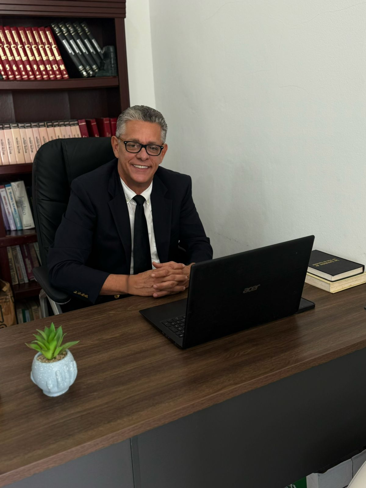
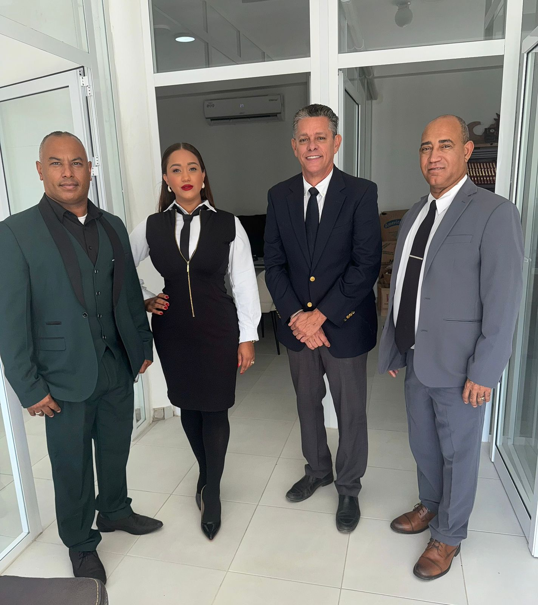
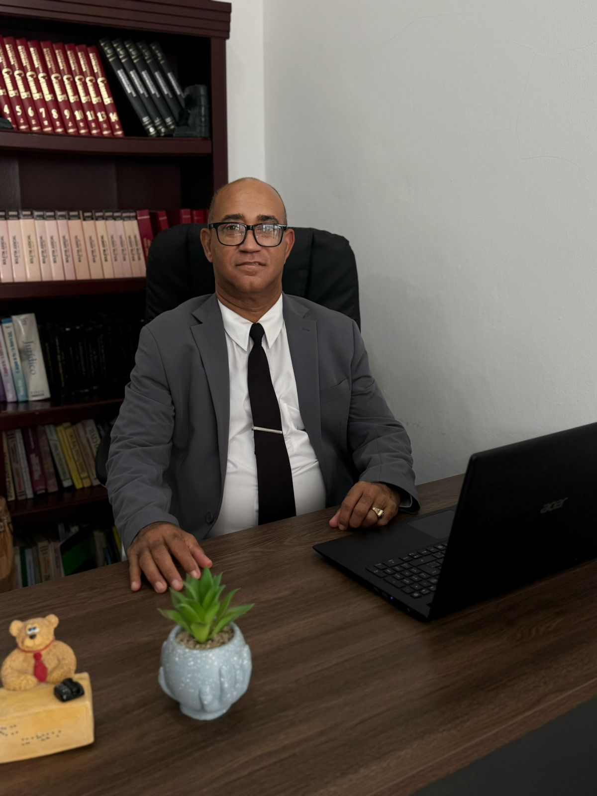
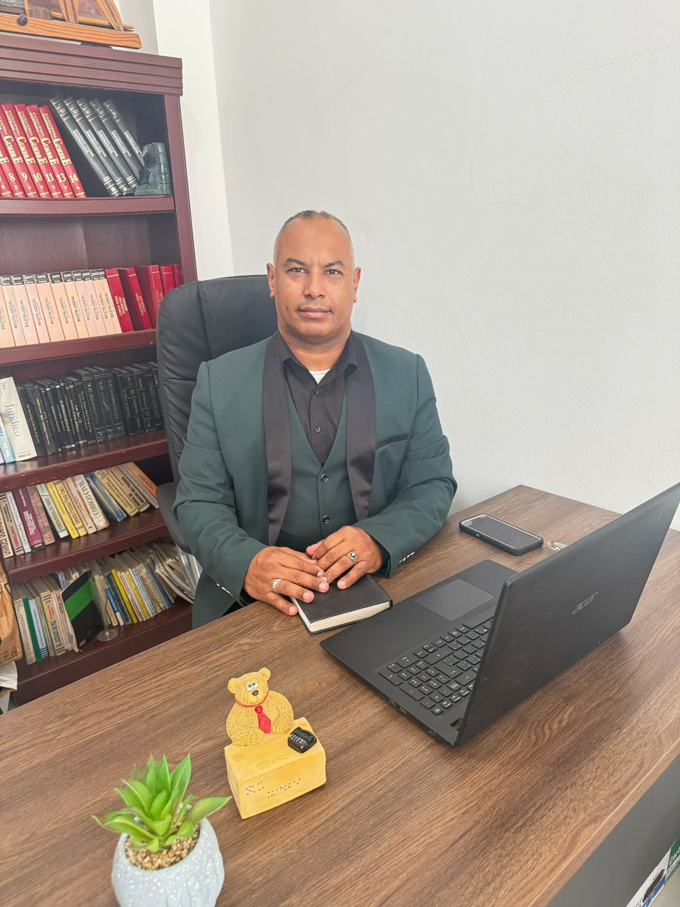
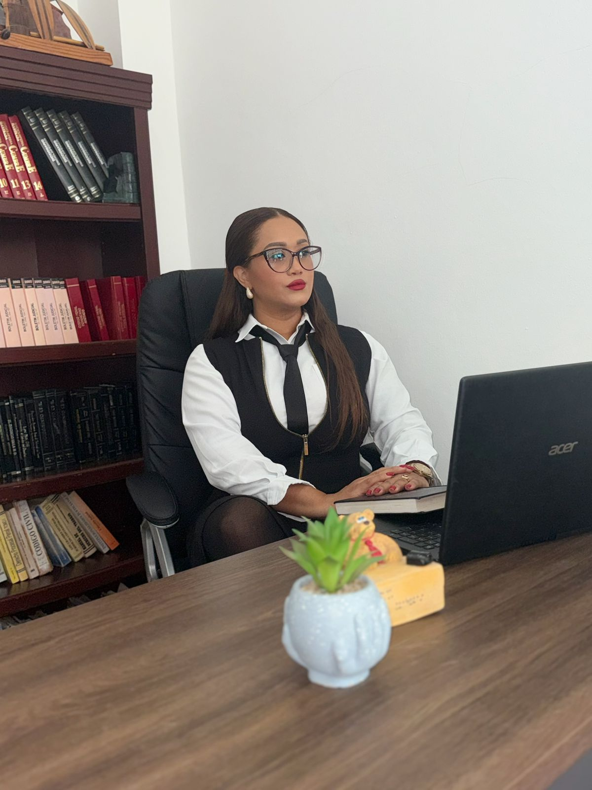

Socio propietario
Rafael A. Martínez
Candelario
Derecho civil, comercial, inmobiliario y asuntos de tierras.
Un equipo cercano para orientarle con claridad y acompañarle en cada etapa de su proceso legal.

Cuatro profesionales, una misma vocación: brindarle asesoría y representación con ética y responsabilidad.

Derecho civil, comercial, inmobiliario y asuntos de tierras.

Derecho civil y representación judicial.

Derecho penal, litigación y defensa jurídica.

Derecho civil de familia y asesoría en el área de impuestos internos.
Cuéntenos qué necesita. Le ayudaremos a identificar el área y el profesional que atenderá su consulta.
Asistencia y representación en procesos penales.
Asuntos civiles y solución de conflictos.
Orientación para negocios y relaciones comerciales.
Consultas y procesos vinculados al trabajo.
Asuntos de propiedad y jurisdicción inmobiliaria.
Orientación sobre solicitudes de medidas urgentes.
Acompañamiento en trámites registrales.
Asistencia en gestiones ante la DGII.
Estamos preparando un espacio para consultar el estado de sus expedientes y los documentos compartidos por la oficina.
Conocer el portal ↗Coordine una consulta con nuestra oficina. Puede escribir a cualquiera de nuestros contactos por WhatsApp.
Para consultar un caso en curso, indique su código de cliente al comunicarse con la oficina.